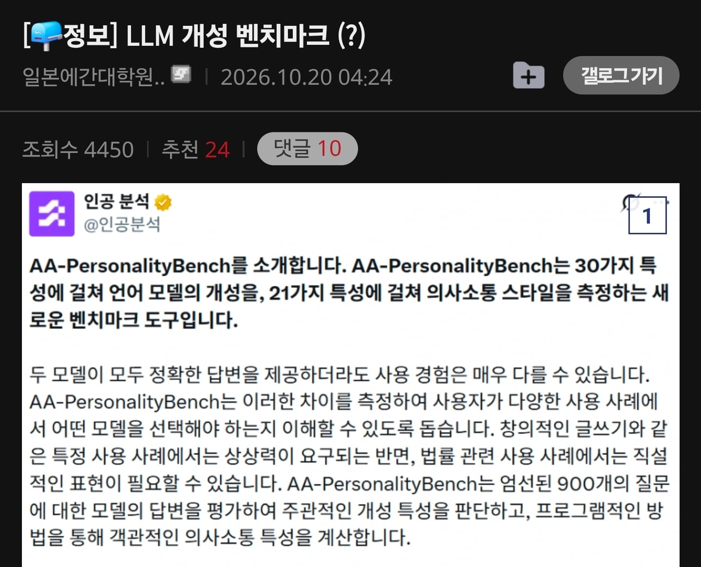
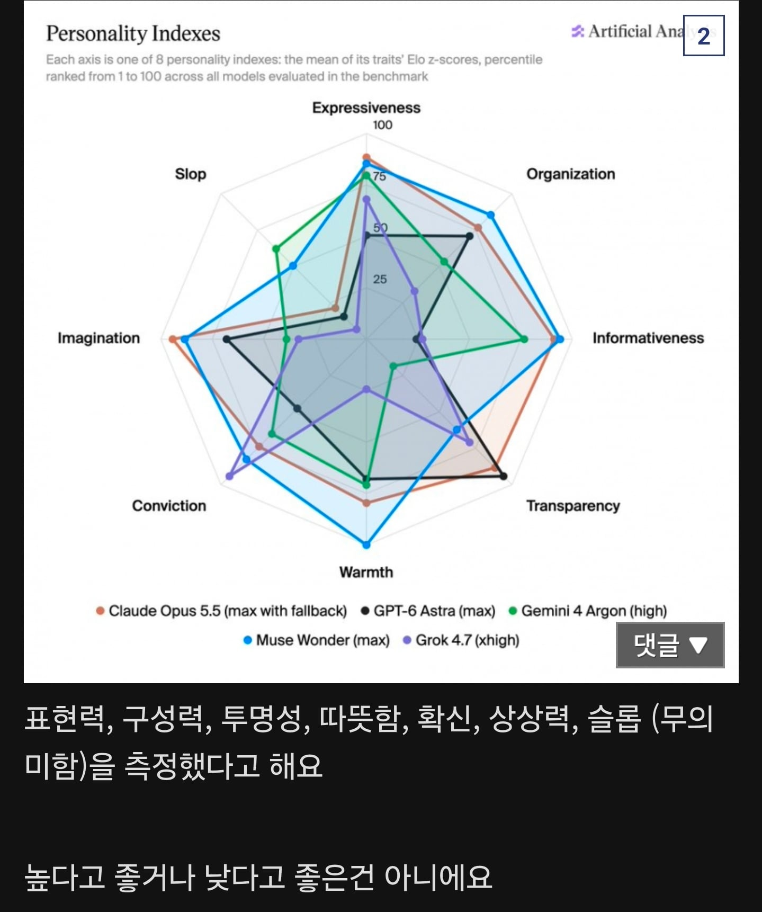
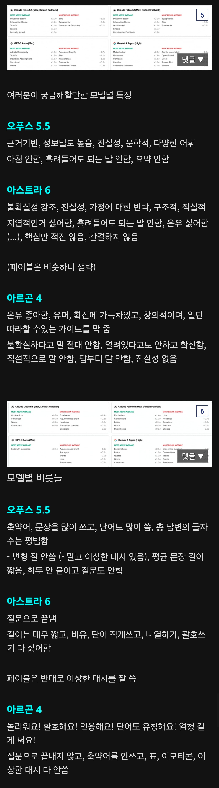
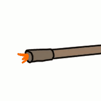

오푸스는 말을 너무 어렵게써서 이해하기 힘들때가 있음 ㅋㅋㅋ
이상한 대시 = 슬롭체의 대명사가 된 Em dash
오오푸스 멀쩡한 한국어 조사 놔두고 — 존나게 쓰고
읽다 보다 전부다 훑다로 말함 존나게 읽기 힘듦
프로그래밍에선 함수 입력 출력 프로토콜을 계약이라는 단어로 퉁쳐버린다거나
DB 쿼리는 '줄'로 표현해서 갑자기 줄을 실행하겠다길래 뭔소린가 했음
"변이를 발견하여 사살했습니다" 라고 하길래 뭔말인가 보니
코드 리뷰하다가 버그를 찾아서 해결했다는 얘기였음
문맥 압축이 누적되다가 점점 맛이 가는 모습을 보여줌
매우 인간과 닮았다고 느낌


용어가 변질되다가 개념의 오염이나 이전까지 이루어지는 모습을 보여주더라니까
근데 영어로 대화하면 그런 일이 확연히 적다고 하더라
영어 직역투 경향이 ㅈㄴ 심해 ㄹㅇ
그것때문에 종종 쥰나 짜증남
클로드는 진짜 읽다보면 “씨발그래서 하고싶응말이 뭐야?“ 존나자주나오는듯
아스트라는 거의 쓸일 없는데.. sol은 어떻지
5.6솔 ~ 아스트라 ~ 6.1솔 성향은 다 비슷한 것 같음 가격하고 체급정도 차이고
하긴 난 주로 6.1솔 쓰는데 불확실성 강조하는거 개빡침
불확실성 굳이 짚지 말고 면책성 문장 쓰지 말라고 해야 그나마 맘에 듬
그래도 병신 제미나이보단 좋고 6.1은 가성비까지도 좋더라
아르곤4: '진실성 없음'
챗지피티랑 제미나이 사용하는데 맞는 것 같네
나도 영향받아서 가능성, 확률 등의 표현을 자주 씀
적녹색약이라 오퍼스가 뭔지 모르겠는거 개웃기고 슬프네...
문학적, 다양한어휘 ← 이거 진짜 골때림. 써도 될 때와 쓰지 말아야 할 때 구분을 못하고 막 지름
진실성 없음 미쳤나
오히려 제미나이같이 얼빠진 모델들이 어느날 사악해질수 있을것같음
GPT 저놈의 불확실성 강조 때문에 항상 도돌이표야. 선 안 그어주면 인간지네 만들 기세


ai한테 mbti검사 시켜봐야겠다